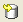
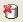

Contents |
What
The SQL Execute view is a tool in which you can write and execute SQL queries.
{kind=link}
How
Prerequisite: A database connection to execute queries against must already be configured.
Writing and Executing SQL Queries
Type your query statement in the text area of the SQL Execute View. You can also import SQL scripts by clicking the Open SQL File button.
You can save your scripts by clicking the Save as SQL File button.
 Click the Execute All SQL button.
Click the Execute All SQL button.
Or click the execute as Script button.
Click the Clear button to clear your query.
To commit a SQL statement, click the Manual Commit button.
 Or you can click Commit , or Rollback buttons.
{kind=link}
{kind=link}
{kind=link}
{kind=link}
{kind=link}
{kind=link}
{kind=link}
Displaying the SQL Execute View
You can switch to the Database perspective—do it by clicking the  or selecting it from the Open Perspective menu in the upper right corner of your workbench—or simply open the view in your current perspective by choosing Show View > SQL Execute View from the Window menu (or Show View > Other > SQL Execute View if SQL Execute View isn't already on the show View menu).
or selecting it from the Open Perspective menu in the upper right corner of your workbench—or simply open the view in your current perspective by choosing Show View > SQL Execute View from the Window menu (or Show View > Other > SQL Execute View if SQL Execute View isn't already on the show View menu).